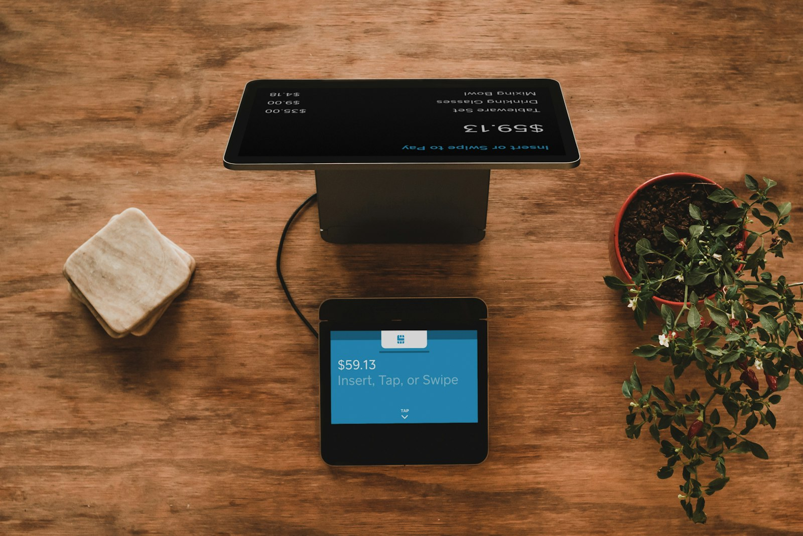

TikTok Shop là gì mà khiến cả thế giới thương mại điện tử phải vẽ lại bản đồ? Đó là nơi người ta không đi tìm sản phẩm, sản phẩm tự tìm đến họ qua từng video. Với seller Việt, TikTok Shop US là cánh cửa lớn nhưng cũng nhiều điều kiện nhất; bài viết này sẽ giúp bạn hiểu đúng luật chơi trước khi đặt chân vào.
Chúng mình viết bài này từ góc nhìn của một công ty thương mại điện tử xuyên biên giới đặt xưởng tại Đồng Nai, bán hàng cá nhân hóa sang thị trường Mỹ mỗi ngày. Không lý thuyết suông, chỉ những gì một seller Việt cần biết để bắt đầu bán hàng TikTok Shop một cách nghiêm túc trong năm 2026.
01. TikTok Shop là gì? Thương mại nội dung thay thế thương mại tìm kiếm
TikTok Shop là hệ thống bán hàng gắn thẳng vào ứng dụng TikTok: sản phẩm xuất hiện dưới dạng giỏ hàng trong video ngắn, phiên livestream và gian hàng (showcase) trên trang cá nhân. Người xem bấm vào giỏ, thanh toán ngay trong app, không cần rời sang website nào khác. Toàn bộ hành trình từ "thấy hay quá" đến "đặt hàng xong" gói gọn trong vài chục giây.
Điểm khác biệt cốt lõi nằm ở mô hình thương mại nội dung (content commerce). Trên Amazon hay Google, khách gõ từ khóa vì họ đã biết mình cần gì, đó là thương mại tìm kiếm, cuộc chiến nằm ở thứ hạng và giá. Trên TikTok, khách đang giải trí và bị nội dung thuyết phục rằng họ muốn một thứ mà năm phút trước chưa hề nghĩ tới. Nhu cầu được tạo ra, không phải được đáp ứng.
Hệ quả quan trọng cho seller: thuật toán phân phối theo chất lượng nội dung, không theo tuổi đời gian hàng. Một shop mới toanh với video chạm đúng cảm xúc có thể vượt mặt shop nghìn đơn, điều gần như không thể xảy ra trên các sàn truyền thống. Đó là lý do hàng cá nhân hóa như Print-on-Demand, vốn giàu câu chuyện và cảm xúc, đang bùng nổ trên nền tảng này.
02. TikTok Shop khác Amazon và Etsy thế nào?
Nhiều seller Việt bước sang TikTok Shop US với thói quen vận hành của Amazon và nhanh chóng "sốc văn hóa". Bảng so sánh dưới đây giúp bạn định vị đúng cuộc chơi:
| Tiêu chí | TikTok Shop | Amazon | Etsy |
|---|---|---|---|
| Cách khách tìm thấy sản phẩm | Nội dung tự tìm đến khách qua feed đề xuất | Khách chủ động tìm kiếm từ khóa | Tìm kiếm + duyệt theo phong cách, thủ công |
| Yếu tố quyết định đơn hàng | Cảm xúc từ video, độ tin của creator | Thứ hạng, review, giá, tốc độ giao | Tính độc bản, câu chuyện người làm ra |
| Tốc độ scale | Bùng nổ theo video viral, khó đoán | Tăng trưởng đều, dựa vào quảng cáo và rank | Chậm, dựa vào uy tín tích lũy |
| Phù hợp với ai | Seller giỏi nội dung, sản phẩm giàu cảm xúc | Seller giỏi vận hành, tối ưu số liệu | Seller sản phẩm thủ công, cá nhân hóa |
Kết luận thực dụng: đừng chọn "hoặc cái này hoặc cái kia". Kinh nghiệm của chúng mình cho thấy mô hình bền vững là đa kênh, TikTok Shop tạo cú hích nhu cầu, Amazon và Etsy hứng lượng khách đã quen thương hiệu. Nhưng nếu bạn mạnh về nội dung video mà vốn mỏng, TikTok Shop là điểm khởi đầu hợp lý nhất.
03. Điều kiện tham gia TikTok Shop US cho seller Việt
Đây là phần cần viết thận trọng nhất, vì chính sách của TikTok Shop US thay đổi thường xuyên, điều đúng quý này có thể sai quý sau. Nguyên tắc số một: luôn kiểm tra thông báo mới nhất trên TikTok Shop Seller Center trước khi quyết định bất cứ điều gì.
Về bức tranh chung, thị trường US từ trước đến nay đặt yêu cầu cao về tư cách pháp nhân: seller thường cần pháp nhân tại Mỹ hoặc tại quốc gia được nền tảng chấp thuận, kèm hồ sơ thuế và định danh doanh nghiệp hợp lệ. Seller Việt vì vậy phổ biến đi theo một trong ba con đường:
- Thành lập pháp nhân đủ điều kiện: ví dụ mở công ty tại Mỹ (thường là LLC) và hoàn thiện hồ sơ thuế, con đường chính danh, kiểm soát cao nhất, nhưng đòi hỏi chi phí duy trì và hiểu biết pháp lý.
- Hợp tác với đối tác đã có shop hợp lệ: bạn phụ trách sản phẩm và nội dung, đối tác đứng gian hàng, nhanh, nhưng phụ thuộc và cần hợp đồng rõ ràng về dòng tiền.
- Đi qua chương trình chính thức cho seller xuyên biên giới: nền tảng từng mở các chương trình cho seller quốc tế theo từng giai đoạn và từng ngành hàng, đây là cánh cửa đáng theo dõi sát nhất trên Seller Center.
Dù đi đường nào, hãy tránh tuyệt đối việc mua bán tài khoản trôi nổi. Shop đứng tên hồ sơ không sạch có thể bị đóng băng bất cứ lúc nào cùng toàn bộ dòng tiền bên trong, cái giá đắt hơn nhiều so với vài tháng làm hồ sơ tử tế.

04. 4 kênh tạo đơn trên TikTok Shop
Bán hàng TikTok Shop không phải một cách chơi duy nhất mà là bốn kênh phối hợp. Shop khỏe thường đứng vững trên ít nhất hai chân.
Video ngắn gắn giỏ hàng
Kênh nền tảng và bền nhất: video ngắn có gắn nhãn sản phẩm, người xem bấm thẳng vào giỏ. Ưu điểm là một video tốt tiếp tục tạo đơn nhiều tuần sau khi đăng. Đây là kênh cần đầu tư kỹ năng nhất, từ hook 3 giây đến kịch bản theo format, và chúng mình đã viết riêng một bài hướng dẫn chi tiết về cách tạo video TikTok Shop triệu view cho sản phẩm POD.
Livestream bán hàng
Phiên live là nơi chuyển đổi cao nhất: khách hỏi trực tiếp, seller demo sản phẩm tại chỗ, ưu đãi giới hạn thời gian tạo cảm giác khan hiếm. Ở thị trường Mỹ, live hiệu quả thường mang tính trình diễn quy trình, ví dụ máy thêu chạy tên khách ngay trên sóng, hơn là hô giá liên tục kiểu chợ phiên. Nhịp phổ biến: 2–4 phiên mỗi tuần, khung giờ tối theo múi giờ Mỹ.
Gian hàng showcase
Showcase là tủ kính trên trang cá nhân, nơi khách đã tin bạn vào xem toàn bộ sản phẩm. Kênh này ít tạo đơn đột biến nhưng gom đơn đều từ follower cũ. Việc của bạn: ảnh listing chỉn chu, tiêu đề rõ nghĩa, phân loại biến thể đầy đủ và đồng bộ với những gì xuất hiện trong video.
Affiliate: mạng lưới creator bán hộ
Kênh tăng trưởng mạnh nhất về quy mô: bạn mở chương trình hoa hồng, hàng nghìn creator Mỹ tự lấy sản phẩm về quay video. Mỗi creator là một kênh phân phối miễn phí trả tiền theo kết quả. Bí quyết nằm ở mức hoa hồng đủ hấp dẫn, mẫu gửi tặng chọn lọc, và brief ngắn gọn cho creator hiểu sản phẩm cá nhân hóa được thế nào. Nhiều shop POD tại Mỹ tạo phần lớn doanh số từ chính kênh này.
05. Vận hành phía sau: fulfillment và shop health
TikTok Shop US chấm điểm shop bằng bộ chỉ số sức khỏe: tỷ lệ giao đúng hạn, tỷ lệ hủy đơn, tốc độ phản hồi tin nhắn, điểm đánh giá sản phẩm. Chỉ số tụt dưới ngưỡng, shop bị giảm phân phối, thậm chí tạm khóa tính năng bán. Nói cách khác: video kéo khách đến, nhưng vận hành mới giữ được shop sống.
Với hàng POD, thách thức nằm ở chỗ sản phẩm chỉ được sản xuất sau khi có đơn, mọi phút chậm trễ ở xưởng đều ăn thẳng vào hạn giao hàng. Đây là lúc lợi thế tự chủ sản xuất phát huy: tại Ethan Ecom, xưởng in, thêu vi tính nằm ngay trong công ty, đơn về buổi sáng có thể lên máy ngay trong ngày, không phải xếp hàng chờ đối tác gia công. Chuỗi càng ngắn, ngày giao càng sớm, shop health càng đẹp, một vòng xoay tự củng cố.
Checklist vận hành tối thiểu cho seller mới: cài thông báo đơn theo thời gian thực, quy trình duyệt file thiết kế trong vòng vài giờ, đối tác vận chuyển có tracking cập nhật đều, và một người trực tin nhắn khách theo giờ Mỹ. Đặc biệt vào mùa cao điểm cuối năm, lượng đơn có thể tăng gấp nhiều lần ngày thường, hãy đọc bài kế hoạch bán hàng Q4 của chúng mình để chuẩn bị từ sớm.
06. Những lỗi khiến shop bị hạn chế: tránh từ ngày đầu
- Vi phạm bản quyền: lỗi phổ biến nhất của seller POD, in hình nhân vật, logo, câu nói có chủ sở hữu. Hệ thống quét tự động ngày càng gắt; một gậy bản quyền có thể đóng cả gian hàng.
- Ship trễ liên tục: đặt thời gian xử lý ngắn cho đẹp listing rồi giao trễ là con đường nhanh nhất xuống hạng. Thà cài hạn thực tế còn hơn hứa hão.
- Listing sai danh mục hoặc mô tả lệch sản phẩm: chọn sai danh mục để né phí, ảnh không đúng hàng thật, đều bị tính là gian lận listing.
- Nội dung quảng cáo quá lời: tuyên bố công dụng không chứng minh được ("chữa", "trị", "100%") khiến video bị gỡ và shop bị trừ điểm uy tín.
- Kéo khách ra ngoài nền tảng: gắn link, đọc số điện thoại hay mời khách sang kênh khác để chốt đơn, vi phạm trực tiếp quy tắc giao dịch trong app.
Điểm chung của các lỗi trên: đều xuất phát từ tư duy "lách" thay vì "xây". TikTok Shop trừng phạt shortcut rất nhanh, nhưng cũng thưởng rất hậu cho shop làm thật, sản phẩm thật, xưởng thật, giao đúng hẹn.
"Trên TikTok Shop, nội dung quyết định bạn được nhìn thấy, nhưng vận hành quyết định bạn được ở lại."
— Đội ngũ E-commerce, Ethan EcomCâu hỏi thường gặp
Seller Việt có bán được trên TikTok Shop US không?
Có, nhưng không phải bằng cách đăng ký trực tiếp từ Việt Nam như thị trường nội địa. Bạn cần một trong ba con đường ở mục 03: pháp nhân đủ điều kiện, đối tác đứng shop, hoặc chương trình chính thức cho seller xuyên biên giới. Luôn đối chiếu chính sách mới nhất trên Seller Center vì điều kiện thay đổi thường xuyên.
Bán TikTok Shop cần bao nhiêu vốn để bắt đầu?
Thấp hơn đáng kể so với Amazon FBA, vì mô hình POD không cần ôm tồn kho, sản phẩm chỉ sản xuất khi có đơn. Chi phí chính nằm ở pháp lý ban đầu, mẫu sản phẩm để quay nội dung và thời gian sản xuất video đều đặn. Vốn lớn nhất thực ra là kỷ luật làm nội dung mỗi ngày.
Không giỏi quay video thì có nên làm TikTok Shop?
Vẫn có đường đi: kênh affiliate cho phép hàng nghìn creator quay video hộ bạn, việc của bạn là sản phẩm tốt, hoa hồng hấp dẫn và vận hành chuẩn. Tuy vậy, shop tự chủ được nội dung luôn có lợi thế dài hạn, kỹ năng video là khoản đầu tư đáng giá nhất trên nền tảng này.
TikTok Shop có thay thế được Amazon không?
Không thay thế, chúng bổ trợ nhau. TikTok Shop tạo nhu cầu và cú bùng nổ ngắn hạn; Amazon hứng tệp khách đã biết thương hiệu và mang lại dòng đơn ổn định. Seller khôn ngoan dùng TikTok làm mũi khoan mở thị trường, rồi dựng hệ đa kênh phía sau.